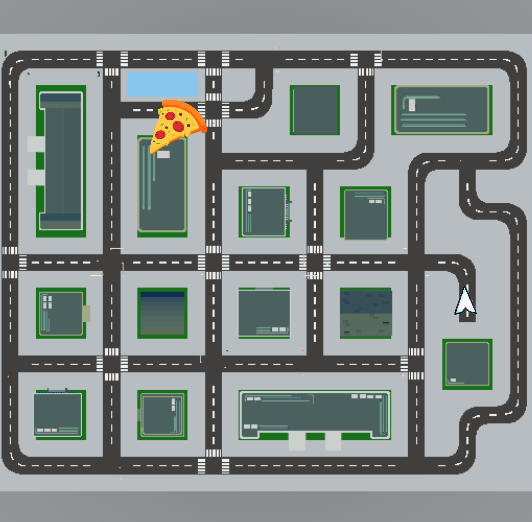
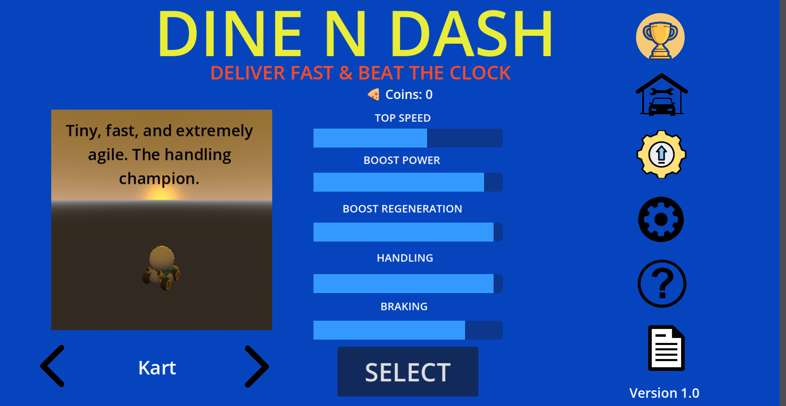
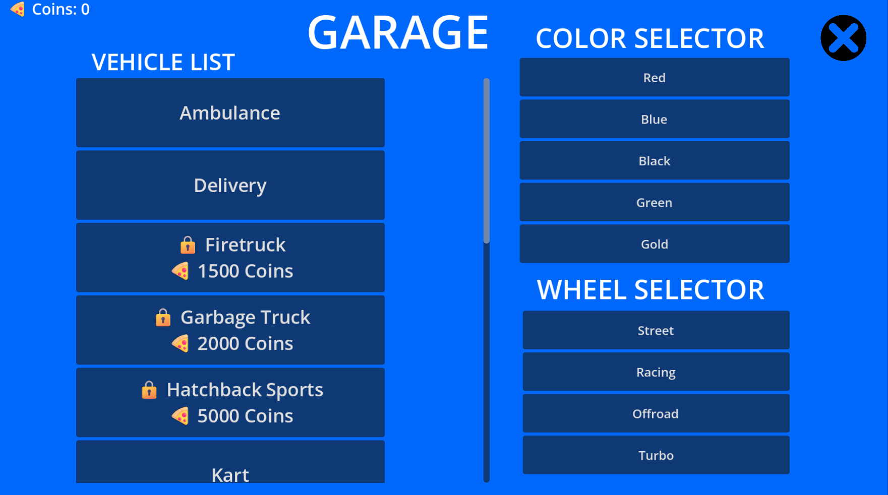
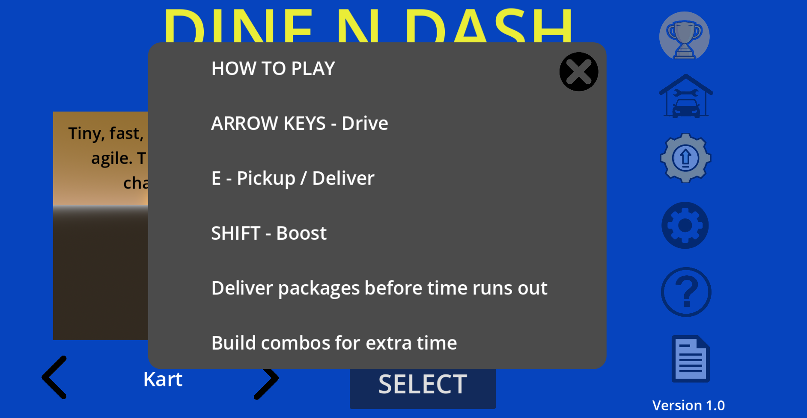
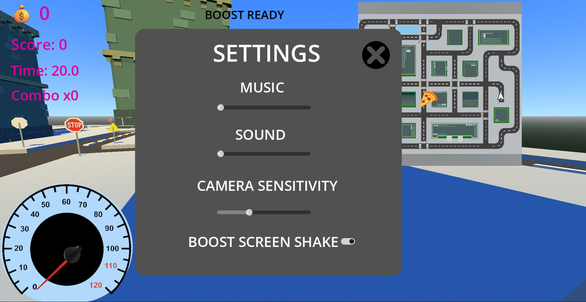
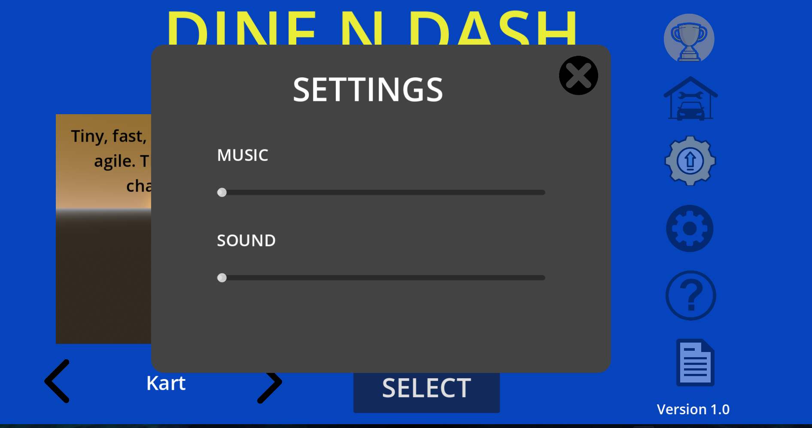
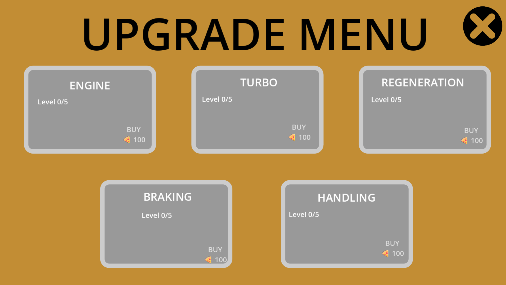
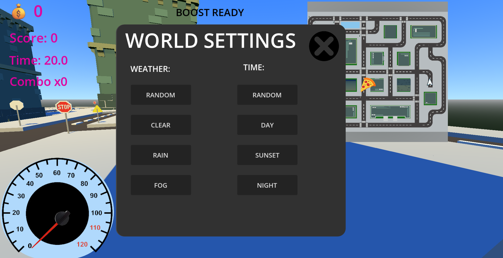
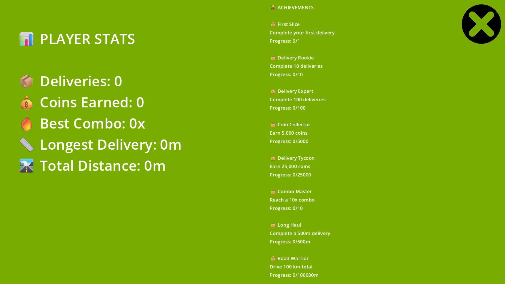
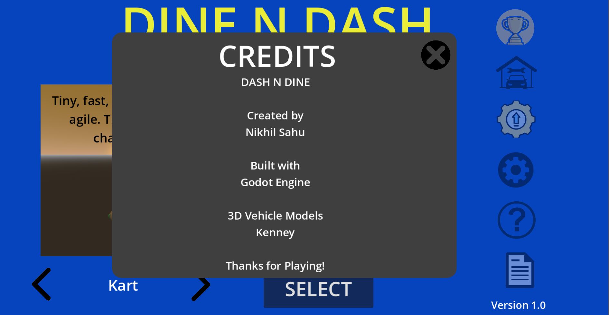

Driving Gameplay
A look at the driving environment and the core vehicle gameplay in Dine N Dash.
GameplayExplore Dine N Dash through screenshots of its driving environment, player interfaces, vehicle systems, and technical implementation. Each image offers a closer look at the design and systems behind the game.
Explore the city environment and navigation tools that connect locations throughout the driving experience.
A look at the driving environment and the core vehicle gameplay in Dine N Dash.
Gameplay
Roads, blocks, sidewalks, and buildings form the setting for the game's driving and delivery activities.
World Design
The minimap helps players understand their position within the city environment.
NavigationExplore the interfaces used to navigate the game, select vehicles, review instructions, and access available configuration options.

The central menu for accessing the game's available options.
Interface
The garage interface for viewing and selecting available vehicles before driving.
Vehicles
Instructions that introduce players to the controls and gameplay objectives.
Tutorial
The interface for adjusting supported gameplay settings.
Settings
Menu configuration options presented through the game's interface.
Interface
An overview of the vehicle upgrade interface and the improvement options represented in the game.
Upgrades
The interface for the world's available configuration options.
WorldA closer look at the scripting, supporting systems, and presentation elements that contribute to the Dine N Dash experience.

A look at the GDScript and technical logic behind the game's systems and interactions.
Engineering
The achievements interface, designed to present player accomplishments and progression.
Game Features
Project credits and acknowledgements for resources and contributions associated with the game.
Project DetailsDine N Dash brings together city environment design, vehicle gameplay, navigation, and player-facing interfaces in a single Godot project.
The gallery showcases the project's current features and technical work. Screenshots represent the project as shown and are not a guarantee that every feature or export platform is fully functional.